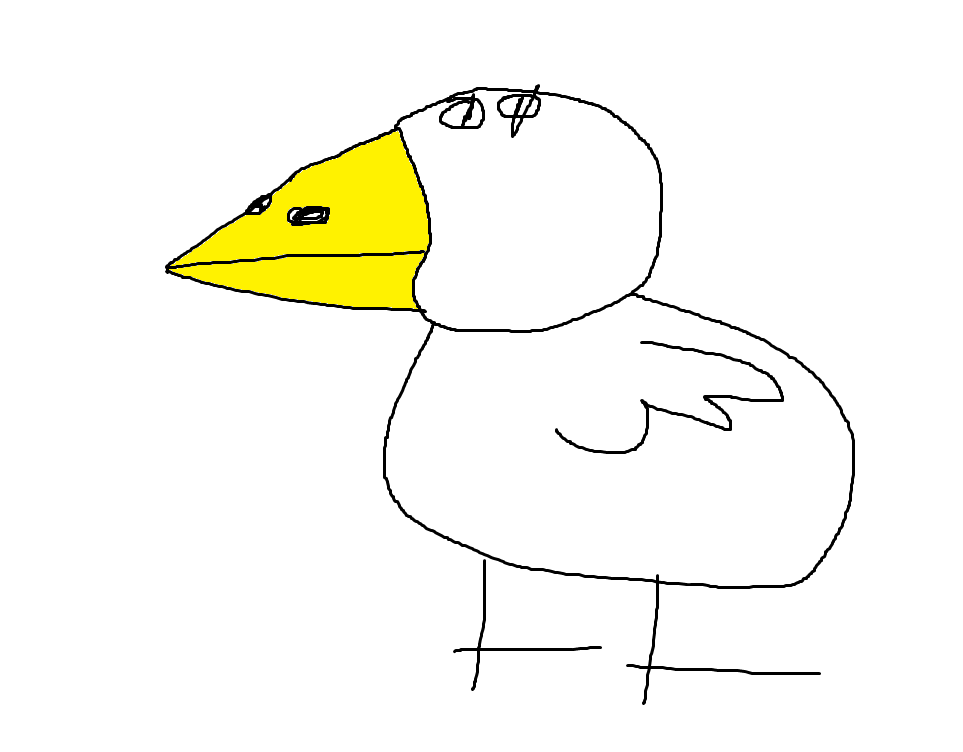

Luminard est le Canard Lumière. Il est de type Support et ses compétences de soutient soutiendront votre équipe tout le long de la partie!
Compétences :
Comp. 1 : Charge! : Fonce sur un ennemis avec 25% de chances de l'assomer.
Comp. 2 : Danse des Canards : Fait danser tous les ennemis et tous tes alliés pendant 10 tours. (N'affecte pas le temps de pause de "Danse des Canards") Tour de temps de pause : 5 tours.
Comp. 3 : Lumière aveuglante : Aveugle les ennemis pendant 2 tours. Quand un ennemis est aveugle, il a 80% de chances de raté son attaque. Tour de temps de pause : 7 tours.
